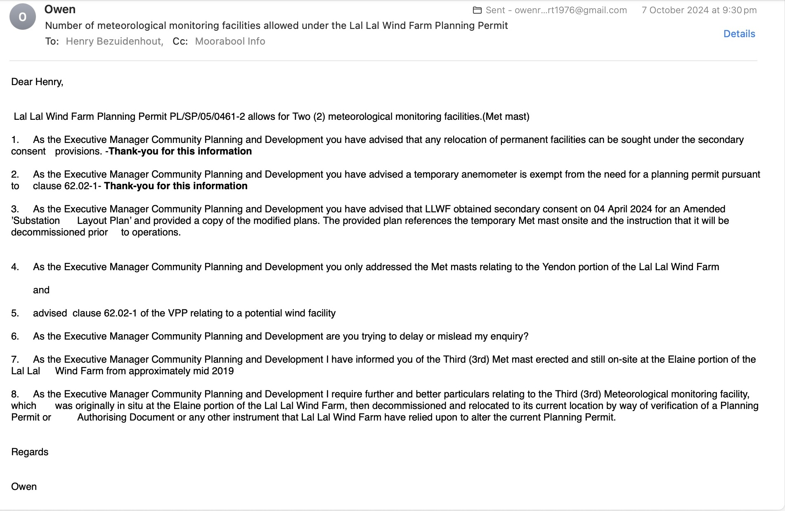

Government & Regulatory Agencies
A documentary gateway to the principal public-authority records concerning the planning, regulation, assessment, disclosure and administrative treatment of the Lal Lal Wind Farm.
How this section works
This page is the live gateway to the agency-record section of the record. Each agency page will explain the agency's role, identify the documents presently held by the record, trace the correspondence and Freedom of Information record, and state the current documentary position without making findings about compliance or regulatory conduct.
Each agency record follows the same structure
Using one consistent template will allow readers to compare the agency records without confusing their different statutory roles.
Principal agency records
The cards below identify the present scope and development status of the individual agency records.
EPA Victoria
2026 update: the Trustee's Notice — Documentary Reconciliation of EPA's Current Regulatory Position is published. The Notice places EPA's stated regulatory position alongside the governing statutory framework, Planning Permit PL-SP/05/0461, the endorsed Noise Compliance Testing Plan, NZS 6808:2010 and documentary material obtained through statutory disclosure, and asks EPA to identify the documentary pathway supporting its present position.
The EPA pathway also includes the Noise Management Plan custody and reliance chronology, auditor material, technical reliance records and Freedom of Information disclosure presently held by the record.
Department of Transport and Planning
2026 update: DTP FOI CS019200, the Trustee clarification correspondence and DTP's supplementary clarification dated 4 August 2026 are now published. The 17 July decision records the commissioning and completion records not located. The 4 August letter states that, following relevant enquiries, DTP was unable to locate any documents in response to Part 4 concerning documentary authority for the identified departures from the NZS 6808:2010 definitions of background sound level and notional boundary.
The DTP record will explain the planning-administration pathway and the documents identified through formal disclosure processes. DTP FOI CS015466 located and released Sonus S5464C11, but did not identify a separate peer-review or verification report corresponding specifically with that later assessment.
Moorabool Shire Council
Planning administration recipient: Henry Bezuidenhout, Executive Manager Community Planning & Development.
7 October 2024 - third Elaine meteorological monitoring facility expressly raised with Council
On 7 October 2024, the Beneficiary wrote to Henry Bezuidenhout, Executive Manager Community Planning & Development, concerning the number of meteorological monitoring facilities permitted for the Lal Lal Wind Farm.
12 February 2025: The Beneficiary emailed Henry Bezuidenhout and Council while the asserted third Elaine meteorological mast was being removed, stating that it was “currently being pulled down, today” and expressly recording the date as 12 February 2025. The published copy redacts only the Beneficiary's email address.
20 February 2025: Council replied that it understood from LLWF that a temporary meteorological mast had recently been decommissioned and confirmed that LLWF did not require a planning permit to remove the temporary mast.
21 and 24 February 2025: The Beneficiary followed up, seeking any secondary consent orders or dates and the planning basis relied upon for the temporary meteorological mast to have remained on site for longer than three years. The 24 February email requested acknowledgement. The published correspondence redacts only the Beneficiary's email address.
The email recorded the Beneficiary's understanding that Planning Permit PL/SP/05/0461-2 allowed two meteorological monitoring facilities and referred to earlier Council advice concerning secondary consent, a temporary anemometer and the amended Substation Layout Plan.
The Beneficiary then expressly raised what he described as a third meteorological monitoring facility at the Elaine portion of the wind farm, stated to have been erected from approximately mid-2019, and sought further particulars identifying a planning permit, authorising document or other instrument relied upon for that facility and its relocation.

8 April 2026: Council issued FOI decision SR.139279 concerning the Elaine Meteorological Monitoring Facility. The refined request sought any formal approval, consent, authorisation or endorsement issued or recorded by Council in relation to establishment or operation of the facility under Planning Permit PL-SP/05/0461-2. Council recorded that no documents meeting the terms of the request were identified after searches by Community Planning & Development staff. Open decision.
9 April 2026: the Trustee sought clarification of whether Council had formed a concluded view regarding the authorisation status of the Elaine meteorological monitoring facility and the documentary basis for any such view.
15 April 2026: Council issued FOI decision SR.142870 recording searches and no responsive formal commissioning records found. On the same date, the Trustee separately sought clarification from the Executive Manager concerning whether Council had formed or relied upon a commissioning date and the basis on which that position was recorded.
22 April 2026: the Trustee provided Governance with consolidated administrative-record clarification concerning the meteorological facility and commissioning pathway.
14 May 2026: Governance stated that the FOI processes were complete, its involvement had concluded and no further response would be provided.
20 July 2026: the Trustee issued a Notice to the Chief Executive Officer asking whether Council considers that its administrative record accurately reflects its historical administration of Planning Permit PL-SP/05/0461 while Council was identified as the Responsible Authority for administration and enforcement.
24 July 2026: the Trustee provided supplementary reference material to assist Council in locating documents already forming part of the administrative and public record. The correspondence states that the material was provided for convenience only, was not intended to expand the Notice, and comprised four concise bundles addressing the planning framework, construction and commissioning, compliance reports, and selected FOI decisions and Council correspondence.
Australian Energy Infrastructure Commissioner
The published pathway distinguishes the Beneficiary’s historical complaint correspondence from the Trustee’s later administrative and evidentiary record.
19 June 2025: Commissioner Tony Mahar recorded that the AEIC had considered the complaint, referred to EPA Victoria’s assessment that the Lal Lal Wind Farm was complying and that EPA would take no further regulatory action, and concluded that the AEIC could not assist further.
Administrative continuity: correspondence records Carolyn Francis as Manager – South West at EPA Victoria in January 2025 and later as Assistant Commissioner within the AEIC. On 11 April 2025, the AEIC stated that she would not be involved in the case because of her previous involvement in related matters.
March–July 2026: the Trustee progressively provided the Notice, Supporting Record, annexures, crystallisation notice and EPA reconciliation notice so that the Commissioner’s administrative record reflected the developing documentary position. Those communications expressly sought no review or action.
What each agency page will contain
The following sections provide the consistent structure for EPA, DTP, Council and AEIC records, with content adapted to each agency's actual role and documentary record.
Agency role
A plain-English explanation of the agency's statutory or administrative function, carefully distinguished from the role of other authorities.
Documentary pathway
A visual sequence showing how permits, plans, reports, complaints, responses, auditor material and FOI decisions connect.
Key correspondence
Selected letters and emails, organised by subject and date, with direct links to the complete source documents.
Freedom of Information
Relevant FOI decisions and what they identify about agency custody, disclosure, reliance or documents not located.
Later documentary reliance
Where the agency refers to technical reports, consultants, auditors or prior assessments, those references will be shown in context.
Current documentary position
A restrained summary confined to what the presently assembled record identifies, with any limitations expressly stated.
How source material is displayed
Important documents are presented as guided evidence cards rather than placed in an undifferentiated correspondence list.
Correspondence card structure
Document: Agency response or legal correspondence
Date: To be inserted
Documentary role: Explains the agency's stated position or identifies material relied upon.
A short image extract may be added here, followed by a direct link to the complete source document.
FOI card structure
Decision: Agency FOI reference
Documentary role: Records the scope of the request, searches undertaken, documents identified and the decision outcome.
The page would explain the decision in plain English while preserving a direct link to the complete decision notice.
What these pages do not do
- They will not determine whether an agency acted lawfully or unlawfully.
- They will not treat the absence of a disclosed document as proof that the document never existed.
- They will not present correspondence out of chronological or documentary context.
- They will not substitute consultant or auditor opinions for the governing planning and regulatory instruments.
- They will not merge agencies with materially different statutory roles into a single undifferentiated narrative.
Agency Records
The Government & Regulatory Agencies section provides a structured documentary gateway to the public authority records forming part of this record.
Documentary pathways for the four principal public-authority records are now published and will be supplemented as further source material or responses become available.
- 🟢 Government & Regulatory Agencies — Published
- 🟢 EPA Victoria — Documentary pathway published
- 🟢 Department of Transport and Planning — Documentary pathway published
- 🟢 Moorabool Shire Council — Documentary pathway published
- 🟢 Australian Energy Infrastructure Commissioner — Documentary pathway published
Noise Management Plan custody and reliance
The EPA record includes identification of the October 2022 NMP among documents used to assess compliance, later statements that revisions and auditor review remained outstanding, an internal-review description of the document as a draft, and two FOI disclosures of the same October 2022 version.
Victorian Ombudsman
The dedicated oversight record separates the August 2026 complaint pathways by authority, conduct complained of, source documents and current procedural status.
Four distinct pathways are presently recorded: the 14 August Council non-response / Condition 17 online complaint (C/26/15485); the 18 August EPA complaint; the separate 18 August Council historical-administration complaint; and the 25 August DTP complaint.
The record does not treat complaint lodgement or acknowledgement as a finding. Any Ombudsman determination will be recorded only if formally made and available to the public record.
Professional standards record
AAS and AAAC professional-body pathways are recorded separately from the government and regulatory agency record on this page. They concern professional standards processes rather than the statutory functions of EPA Victoria, DTP, Moorabool Shire Council or the Victorian Ombudsman.